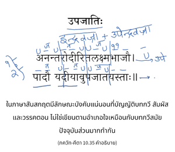
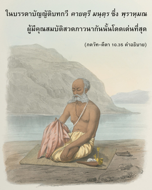

ในบรรดาบทมนต์ใน สาม เวท ข้าคือ พฺฤหตฺ - สาม และในบรรดาบทกวีข้าคือ คายตฺรี ในบรรดาเดือนข้าคือ มารฺคศีรฺษ (พฤศจิกายน-ธันวาคม) และในบรรดาฤดูข้าคือ ฤดูใบไม้ผลิ


องค์ภควานฺทรงอธิบายแล้วว่า ในบรรดาพระเวททั้งหมดพระองค์ คือ สามเวท สามเวท มีความมั่งคั่งเกี่ยวกับบทเพลงอันไพเราะเพราะพริ้งที่เทวดาต่างบรรเลง หนึ่งในบทเพลงเหล่านั้น คือ พฺฤหตฺ-สาม ซึ่งมีทำนองไพเราะมาก และจะร้องในเวลาเที่ยงคืน
ในภาษาสันสกฤตมีลักษณะบังคับแน่นอนที่บัญญัติบทกวี สัมผัส และวรรคตอน ไม่ใช่เขียนตามอำเภอใจเหมือนกับบทกวีสมัยปัจจุบันส่วนมากทำกัน ในบรรดาบัญญัติบทกวี คายตฺรี มนฺตฺร ซึ่ง พฺราหฺมณ ผู้มีคุณสมบัติสวดภาวนากันนั้นโดดเด่นที่สุด คายตฺรี มนฺตฺร ได้กล่าวไว้ใน ศฺรีมทฺ-ภาควตมฺ เพราะว่า คายตฺรี มนฺตฺร หมายไว้เพื่อความรู้แจ้งแห่งองค์ภควานฺโดยเฉพาะ จึงเป็นผู้แทนขององค์ภควานฺ มนฺตฺร นี้มีไว้สำหรับพวกที่มีความเจริญก้าวหน้าในวิถีทิพย์ เมื่อประสบความสำเร็จในการสวดภาวนา คายตฺรี มนฺตฺร จะสามารถบรรลุถึงสถานภาพทิพย์แห่งองค์ภควานฺก่อนอื่นเขาต้องมีคุณสมบัติของบุคคลผู้สถิตอยู่อย่างสมบูรณ์คือ อยู่ในคุณสมบัติแห่งความดีตามกฎแห่งธรรมชาติวัตถุเพื่อสวดภาวนา คายตฺรี มนฺตฺร คายตฺรี มนฺตฺร มีความสำคัญมากในวัฒนธรรมพระเวท และพิจารณาว่าเป็นเสียงอวตารของ พฺรหฺมนฺ พระพรหมทรงเป็นอุปัชฌาย์ และ คายตฺรี มนฺตฺร ถูกส่งลงมาจากพระพรหมในสาย ปรมฺปรา
เดือนพฤศจิกายน-ธันวาคมพิจารณาว่าเป็นเดือนที่ดีที่สุด เพราะว่าในประเทศอินเดียเป็นฤดูเก็บเกี่ยวทุกคนมีความสุขมาก ฤดูใบไม้ผลินั้นเป็นฤดูที่คนชอบกันมากอย่างแน่นอน เพราะว่าไม่ร้อนและไม่หนาวจนเกินไป ทั้งดอกไม้ และต้นไม้ก็เบ่งบานอย่างสมบูรณ์ ในฤดูใบไม้ผลิมีพิธีหลายพิธีที่ระลึกถึงลีลาขององค์กฺฤษฺณ ดังนั้น จึงพิจารณาว่าฤดูนี้เป็นฤดูที่รื่นเริงที่สุด และเป็นผู้แทนขององค์ภควานฺ ศฺรีกฺฤษฺณ